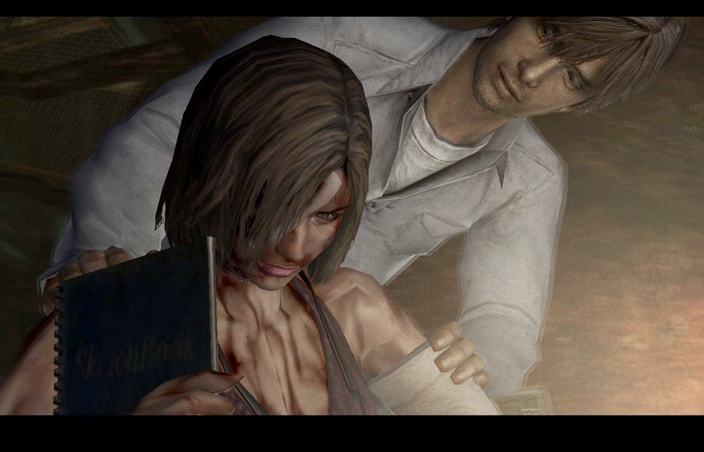
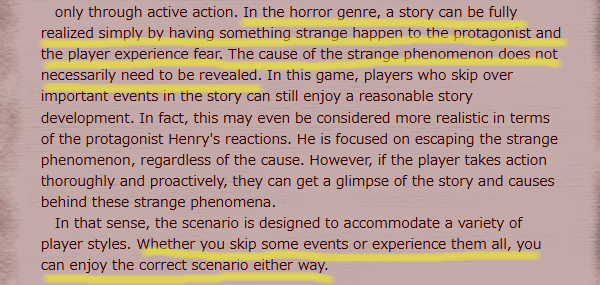
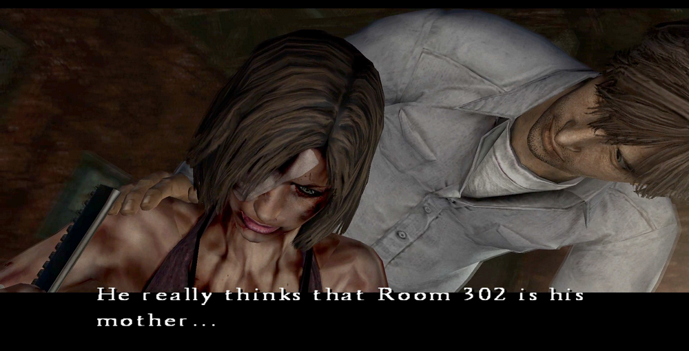
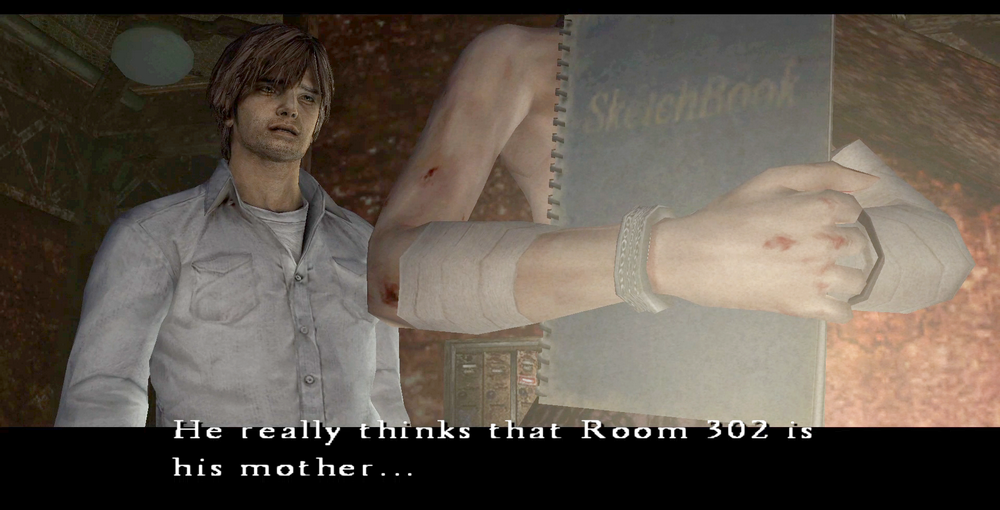
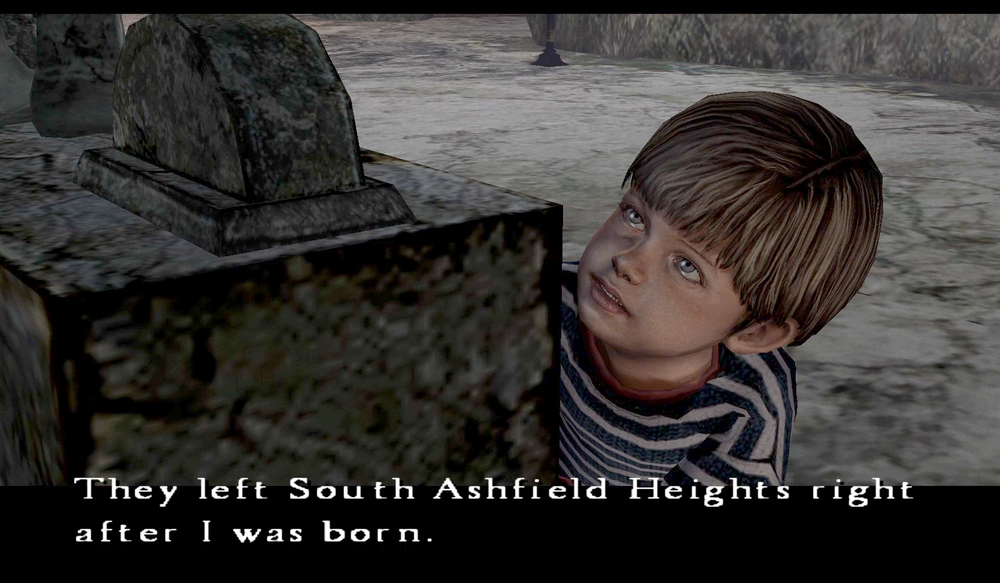
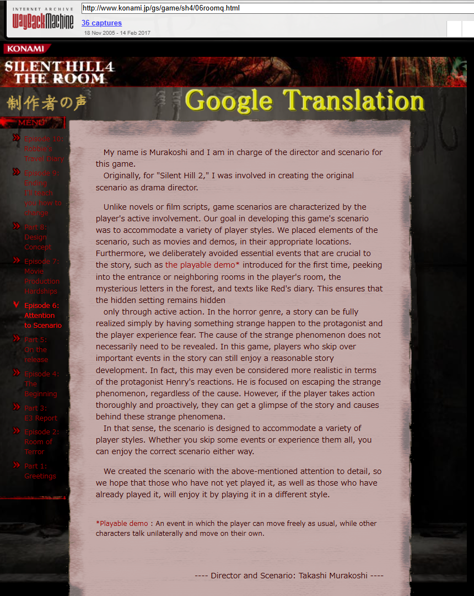

[SH4] Dedication to the Scenario

How the Game Works on Two Levels
![[SH4] Dedication to the Scenario](img/da33.png)
This is a mirror of the DeviantArt version linked above, provided as a backup and for easier access.

This time, I want to talk about Murakoshi-san's scenario. There are comments from him as a director, as well as comments specifically about the scenario. I recommend reading them in translation.
🌐制作者の声「第6回:シナリオへのこだわり」ディレクター兼シナリオ担当 村越卓
From Konami SILENT HILL 4 THE ROOM, Developer's Voice" Vol. 6: "Dedication to the Scenario" Director and Scenario: Suguru Murakoshi
https://web.archive.org/web/20071207104632/http://www.konami.jp/gs/game/sh4/06roomq.html
✅ Quote: Whether you skip some events or experience them all, you can enjoy the main scenario either way.

One point Murakoshi-san highlights in particular is how the game works on two levels: it's scary as a horror game even if you barely read the text, but you can also enjoy it by digging into all the settings.
Mind you, the scariest thing is Henry, instantly adapting to the Otherworld and beating monsters to a pulp with the steal pipe lol. He may just have been hiding what he was really thinking, but he was completely different from Heather, who was clearly confused at first.
And so, especially right after its release, there were quite a lot of people who genuinely believed he was the culprit up to a certain point. Since there were many mysteries and plenty of room for interpretation, a wide range of theories emerged. Well, the thing that's been speculated about the most is Henry's occupation. According to a very old comment by Yamaoka-san, it's something like "a newspaper delivery guy?" ...and for now, that's the only official information we have (?).
I already posted a second-by-second comparison of the Possession Levels when opening the Umbilical Cord Box, but the fact that the mid-game dialogue and ending triggers change depending on Eileen's possession level is also an interesting aspect of this game’s scenario.
And Henry's face during "Possessed Status: Medium" is the scariest, even scarier than Eileen's... "He doesn't show emotion"? That's a lie!

his is the same scene as the cut below, so take a look and compare.
⚠️Spoilers
From here on, this is just my subjective take on the scenario.
I've seen reviews saying things like, "Room 302 being Walter's mother makes no sense," but I think that very absurdity is what makes it so great. Well, even I have a little voice in the back of my mind wanting to grill adult Walter like: "You don't literally believe the room is your physical mother... right? It's just a metaphor for the mother's womb or something... right?"

Murakoshi-san himself mentioned that this is different from novels or movies, and I totally see that. More than that, I felt this was a story those writers could never write, because what they create must actually make logical sense.
Walter is around 34, so there's a good chance his biological parents are still alive.
In novels or movies, they'd probably go with a plot like "using the cult's power to find his real parents and get revenge." That would be logical, but it would also be a "run-of-the-mill" story on a much smaller scale.

But Walter completely ignores his real parents. Little Walter says he was separated right after his birth, so he knows the circumstances, yet for some reason, he never looks for them!
Instead, Walter goes all, in on the cult's scriptures to release his "mother", killing people, performing rituals, creating the Otherworld, and summoning eldritch horrors, deceived into thinking it's his mother. Cult brainwashing is scary, isn't it.
This scale and sheer outrageousness are only possible in a game. It's the result of totally trashing the idea of a "coherent scenario" lol. That's exactly what makes it the Silent Hill-series story, and why Walter became the most tragic "villain" in the entire series. At least, you can't feel any sense of "he got what he deserved" after beating him.
If you just play through it normally, it feels like a series of “I have no idea what's happening, but it's terrifying” moments.
But if you really digest the text and background, it turns into a story where the villain, Walter, has absolutely no salvation no matter how you look at it. It's just pitiful. Like Yamaoka-san once said, it's "the darkest."
Yet, if you dig even deeper, the way the story still quietly offers Walter a hidden chance for salvation is just wonderful, even if it’s only my own deep reading. I truly think whoever created a story like this is a genius.
-
 [SH4] A Mother's Cord
[SH4] A Mother's Cord
The Meaning of the Umbilical Cord in Japanese Culture -
 [SH4] Wake Up Ma: The Most Beautiful Picture Book
[SH4] Wake Up Ma: The Most Beautiful Picture Book
Walter's Potential Happy Ending
